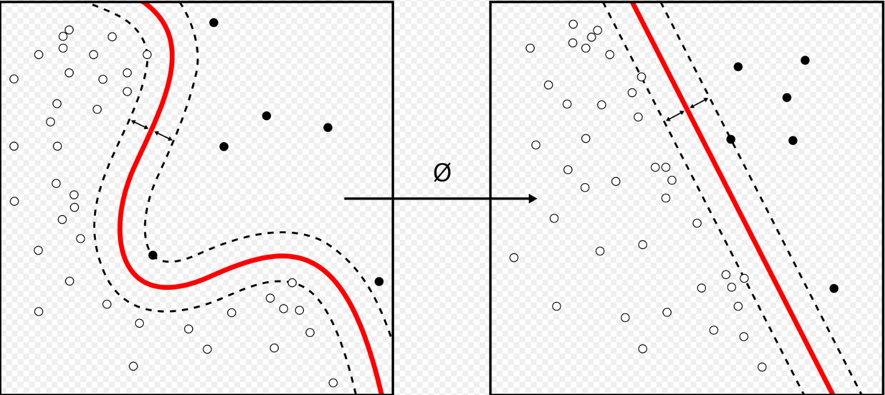
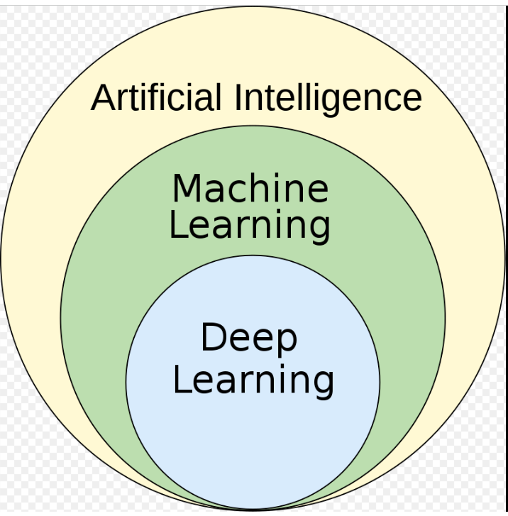
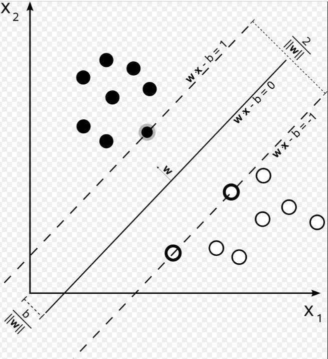

Machine learning
Machine learning (ML) is a field of inquiry devoted to understanding and building methods that 'learn', that is, methods that leverage data to improve performance on some set of tasks. It is seen as a part of artificial intelligence. Machine learning algorithms build a model based on sample data, known as training data, in order to make predictions or decisions without being explicitly programmed to do so. Machine learning algorithms are used in a wide variety of applications, such as in medicine, email filtering, speech recognition, agriculture, and computer vision, where it is difficult or unfeasible to develop conventional algorithms to perform the needed tasks.A subset of machine learning is closely related to computational statistics, which focuses on making predictions using computers, but not all machine learning is statistical learning. The study of mathematical optimization delivers methods, theory and application domains to the field of machine learning. Data mining is a related field of study, focusing on exploratory data analysis through unsupervised learning. Some implementations of machine learning use data and neural networks in a way that mimics the working of a biological brain. In its application across business problems, machine learning is also referred to as predictive analytics.

Overview
Learning algorithms work on the basis that strategies, algorithms, and inferences that worked well in the past are likely to continue working well in the future. These inferences can be obvious, such as "since the sun rose every morning for the last 10,000 days, it will probably rise tomorrow morning as well". They can be nuanced, such as "X% of families have geographically separate species with color variants, so there is a Y% chance that undiscovered black swans exist".
Machine learning programs can perform tasks without being explicitly programmed to do so. It involves computers learning from data provided so that they carry out certain tasks. For simple tasks assigned to computers, it is possible to program algorithms telling the machine how to execute all steps required to solve the problem at hand; on the computer's part, no learning is needed. For more advanced tasks, it can be challenging for a human to manually create the needed algorithms. In practice, it can turn out to be more effective to help the machine develop its own algorithm, rather than having human programmers specify every needed step.
The discipline of machine learning employs various approaches to teach computers to accomplish tasks where no fully satisfactory algorithm is available. In cases where vast numbers of potential answers exist, one approach is to label some of the correct answers as valid. This can then be used as training data for the computer to improve the algorithm(s) it uses to determine correct answers. For example, to train a system for the task of digital character recognition, the MNIST dataset of handwritten digits has often been used.
Artificial intelligence

Machine learning as subfield of AI
Part of machine learning as subfield of AI or part of AI as subfield of machine learning
As a scientific endeavor, machine learning grew out of the quest for artificial intelligence. In the early days of AI as an academic discipline, some researchers were interested in having machines learn from data. They attempted to approach the problem with various symbolic methods, as well as what was then termed "neural networks"; these were mostly perceptrons and other models that were later found to be reinventions of the generalized linear models of statistics. Probabilistic reasoning was also employed, especially in automated medical diagnosis.: 488
However, an increasing emphasis on the logical, knowledge-based approach caused a rift between AI and machine learning. Probabilistic systems were plagued by theoretical and practical problems of data acquisition and representation.
expert systems had come to dominate AI, and statistics was out of favor. Work on symbolic/knowledge-based learning did continue within AI, leading to inductive logic programming, but the more statistical line of research was now outside the field of AI proper, in pattern recognition and information retrieval.: 708–710, 755 Neural networks research had been abandoned by AI and computer science around the same time. This line, too, was continued outside the AI/CS field, as "connectionism", by researchers from other disciplines including Hopfield, Rumelhart, and Hinton. Their main success came in the mid-1980s with the reinvention of backpropagation:
Machine learning (ML), reorganized as a separate field, started to flourish in the 1990s. The field changed its goal from achieving artificial intelligence to tackling solvable problems of a practical nature. It shifted focus away from the symbolic approaches it had inherited from AI, and toward methods and models borrowed from statistics, fuzzy logic, and probability theory.
The difference between ML and AI is frequently misunderstood. ML learns and predicts based on passive observations, whereas AI implies an agent interacting with the environment to learn and take actions that maximize its chance of successfully achieving its goals.
As of 2020, many sources continue to assert that ML remains a subfield of AI. Others have the view that not all ML is part of AI, but only an 'intelligent subset' of ML should be considered AI.
Data mining
Machine learning and data mining often employ the same methods and overlap significantly, but while machine learning focuses on prediction, based on known properties learned from the training data, data mining focuses on the discovery of (previously) unknown properties in the data (this is the analysis step of knowledge discovery in databases). Data mining uses many machine learning methods, but with different goals; on the other hand, machine learning also employs data mining methods as "unsupervised learning" or as a preprocessing step to improve learner accuracy. Much of the confusion between these two research communities (which do often have separate conferences and separate journals, ECML PKDD being a major exception) comes from the basic assumptions they work with: in machine learning, performance is usually evaluated with respect to the ability to reproduce known knowledge, while in knowledge discovery and data mining (KDD) the key task is the discovery of previously unknown knowledge. Evaluated with respect to known knowledge, an uninformed (unsupervised) method will easily be outperformed by other supervised methods, while in a typical KDD task, supervised methods cannot be used due to the unavailability of training data.
Optimization
Machine learning also has intimate ties to optimization: many learning problems are formulated as minimization of some loss function on a training set of examples. Loss functions express the discrepancy between the predictions of the model being trained and the actual problem instances (for example, in classification, one wants to assign a label to instances, and models are trained to correctly predict the pre-assigned labels of a set of examples).
Generalization
The difference between optimization and machine learning arises from the goal of generalization: while optimization algorithms can minimize the loss on a training set, machine learning is concerned with minimizing the loss on unseen samples. Characterizing the generalization of various learning algorithms is an active topic of current research, especially for deep learning algorithms.
Statistics
Machine learning and statistics are closely related fields in terms of methods, but distinct in their principal goal: statistics draws population inferences from a sample, while machine learning finds generalizable predictive patterns. According to Michael I. Jordan, the ideas of machine learning, from methodological principles to theoretical tools, have had a long pre-history in statistics. He also suggested the term data science as a placeholder to call the overall field.
Some statisticians have adopted methods from machine learning, leading to a combined field that they call statistical learning.
Theory
Main articles: Computational learning theory and Statistical learning theory
A core objective of a learner is to generalize from its experience. Generalization in this context is the ability of a learning machine to perform accurately on new, unseen examples/tasks after having experienced a learning data set. The training examples come from some generally unknown probability distribution (considered representative of the space of occurrences) and the learner has to build a general model about this space that enables it to produce sufficiently accurate predictions in new cases.
The computational analysis of machine learning algorithms and their performance is a branch of theoretical computer science known as computational learning theory via the Probably Approximately Correct Learning (PAC) model. Because training sets are finite and the future is uncertain, learning theory usually does not yield guarantees of the performance of algorithms. Instead, probabilistic bounds on the performance are quite common. The bias–variance decomposition is one way to quantify generalization error.
For the best performance in the context of generalization, the complexity of the hypothesis should match the complexity of the function underlying the data. If the hypothesis is less complex than the function, then the model has under fitted the data. If the complexity of the model is increased in response, then the training error decreases. But if the hypothesis is too complex, then the model is subject to overfitting and generalization will be poorer.
In addition to performance bounds, learning theorists study the time complexity and feasibility of learning. In computational learning theory, a computation is considered feasible if it can be done in polynomial time. There are two kinds of time complexity results: Positive results show that a certain class of functions can be learned in polynomial time. Negative results show that certain classes cannot be learned in polynomial time.
Approaches
Machine learning approaches are traditionally divided into three broad categories, which correspond to learning paradigms, depending on the nature of the "signal" or "feedback" available to the learning system:
Supervised learning:
The computer is presented with example inputs and their desired outputs, given by a "teacher", and the goal is to learn a general rule that maps inputs to outputs.
Unsupervised learning:
No labels are given to the learning algorithm, leaving it on its own to find structure in its input. Unsupervised learning can be a goal in itself (discovering hidden patterns in data) or a means towards an end (feature learning).
Reinforcement learning:
A computer program interacts with a dynamic environment in which it must perform a certain goal (such as driving a vehicle or playing a game against an opponent). As it navigates its problem space, the program is provided feedback that's analogous to rewards, which it tries to maximize.
Supervised learning
A support-vector machine is a supervised learning model that divides the data into regions separated by a linear boundary. Here, the linear boundary divides the black circles from the white.
Supervised learning algorithms build a mathematical model of a set of data that contains both the inputs and the desired outputs. The data is known as training data, and consists of a set of training examples. Each training example has one or more inputs and the desired output, also known as a supervisory signal. In the mathematical model, each training example is represented by an array or vector, sometimes called a feature vector, and the training data is represented by a matrix. Through iterative optimization of an objective function, supervised learning algorithms learn a function that can be used to predict the output associated with new inputs. An optimal function will allow the algorithm to correctly determine the output for inputs that were not a part of the training data. An algorithm that improves the accuracy of its outputs or predictions over time is said to have learned to perform that task.

Types of supervised-
Algorithms include active learning, classification and regressionClassification algorithms are used when the outputs are restricted to a limited set of values, and regression algorithms are used when the outputs may have any numerical value within a range. As an example, for a classification algorithm that filters emails, the input would be an incoming email, and the output would be the name of the folder in which to file the email.
Similarity learning is an area of supervised machine learning closely related to regression and classification, but the goal is to learn from examples using a similarity function that measures how similar or related two objects are. It has applications in ranking, recommendation systems, visual identity tracking, face verification, and speaker verification.
Unsupervised learning
Unsupervised learning algorithms take a set of data that contains only inputs, and find structure in the data, like grouping or clustering of data points. The algorithms, therefore, learn from test data that has not been labeled, classified or categorized. Instead of responding to feedback, unsupervised learning algorithms identify commonalities in the data and react based on the presence or absence of such commonalities in each new piece of data. A central application of unsupervised learning is in the field of density estimation in statistics, such as finding the probability density function. Though unsupervised learning encompasses other domains involving summarizing and explaining data features.
Cluster analysis is the assignment of a set of observations into subsets (called clusters) so that observations within the same cluster are similar according to one or more predesignated criteria, while observations drawn from different clusters are dissimilar. Different clustering techniques make different assumptions on the structure of the data, often defined by some similarity metric and evaluated, for example, by internal compactness, or the similarity between members of the same cluster, and separation, the difference between clusters. Other methods are based on estimated density and graph connectivity.
Semi-supervised learning
Semi-supervised learning falls between unsupervised learning (without any labeled training data) and supervised learning (with completely labeled training data). Some of the training examples are missing training labels, yet many machine-learning researchers have found that unlabeled data, when used in conjunction with a small amount of labeled data, can produce a considerable improvement in learning accuracy.
In weakly supervised learning, the training labels are noisy, limited, or imprecise; however, these labels are often cheaper to obtain, resulting in larger effective training sets
Reinforcement learning
Reinforcement learning is an area of machine learning concerned with how software agents ought to take actions in an environment so as to maximize some notion of cumulative reward. Due to its generality, the field is studied in many other disciplines, such as game theory, control theory, operations research, information theory, simulation-based optimization, multi-agent systems, swarm intelligence, statistics and genetic algorithms. In machine learning, the environment is typically represented as a Markov decision process (MDP). Many reinforcement learning algorithms use dynamic programming techniques.Reinforcement learning algorithms do not assume knowledge of an exact mathematical model of the MDP, and are used when exact models are infeasible. Reinforcement learning algorithms are used in autonomous vehicles or in learning to play a game against a human opponent.